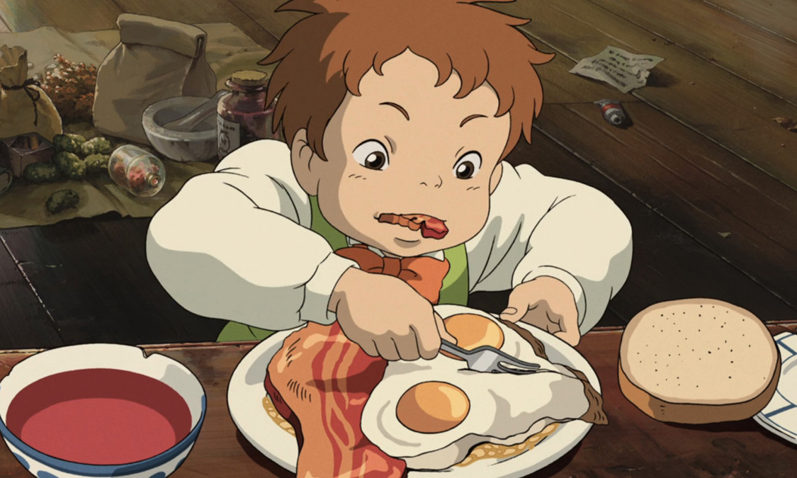
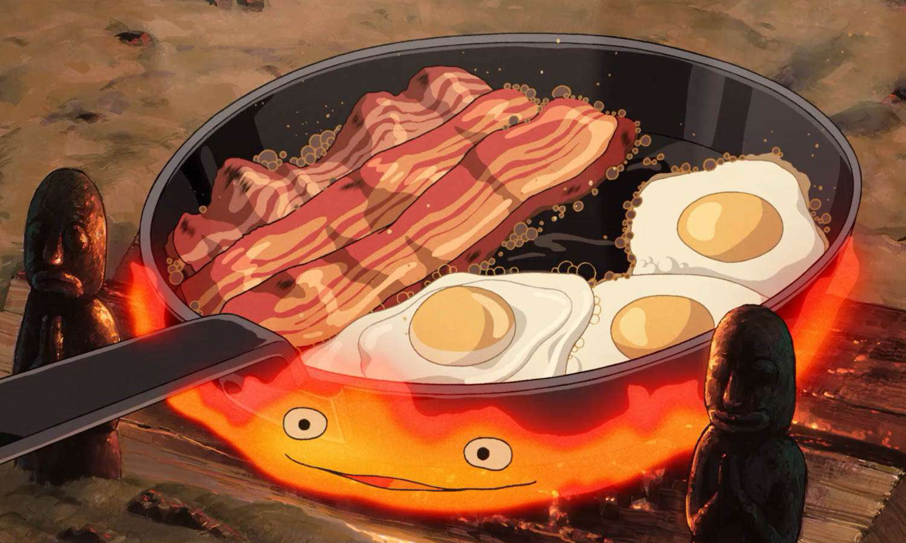

howl’s moving
castle: bacon
and eggs


Markl is Howl's apprentice in the movie. Not much of his background or past is revealed, except for his first name and that he is training under Howl to become a wizard. He manages Howl's affairs while he is away, dealing with customers in the different towns linked to by the portal.
Sophie uses Calcifer, a talking fire demon that gives the castle its powers, to cook up breakfast for herself, Howl, and Howl's apprentice, Markl. With the help of Howl, the group ends up making a delicious bacon and egg breakfast.